參考 ：心電圖學必讀、網路資源
Introduction
- Basics
- 基本判讀
- 一大格＝5mm
- 橫軸 ：200 ms
- 縱軸 ：0.5 mV
- 速度 ：25毫米/秒
- 一大格＝5mm
- Einthoven triangle
- Lead I + III = II，即I和III之電壓差相加＝II之電壓差
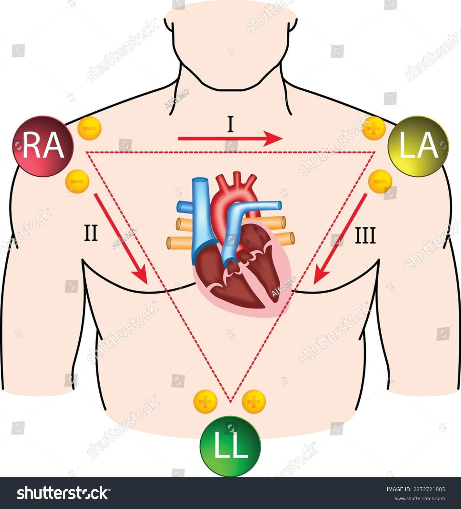
- aVR + aVL ＋aVF = 0，用來監測導極是否放反
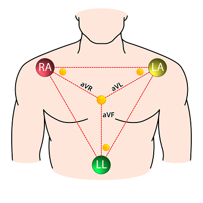
- 胸前導
- Interventricular septum
- V1 ：右側第四肋間
- V2 ：左側第四肋間
- 前壁
- V3 ：在V2/V4中點
- V4 ：鎖骨中線第五肋間
- 側壁
- V5 ：在V4/V6中點
- V6 ：腋中線第五肋間
- Interventricular septum
- 軸向 ：非常重要
- 以Lead I~III以及aVR/aVL/aVF組成
- II、III、aVF為inferior wall
- I、aVL為lateral wall
- aVR正常為負向波，若出現invert，代表可能有下壁或側壁MI
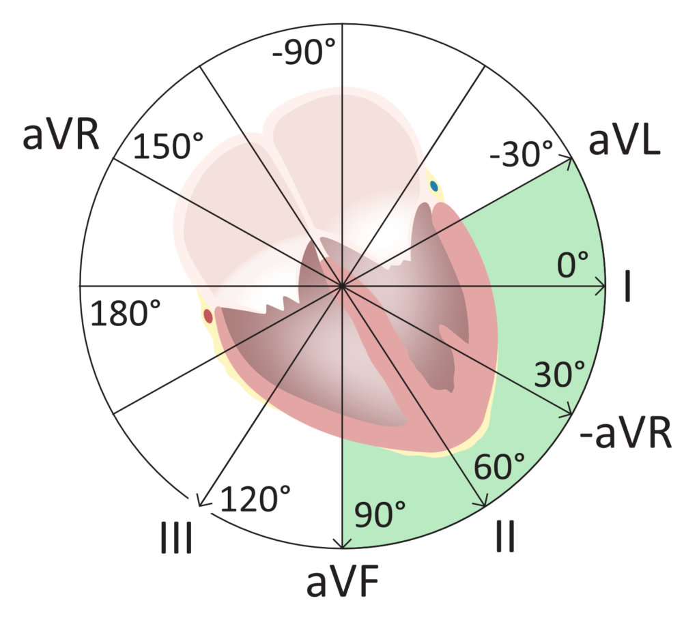
- 利用Lead I與 aVF定義心軸，用最高的R或最深的S定義象限（代表平行軸向）
- 正常軸向為-30~+90
- 左偏 ：Lead I 正向， aVF負向
- 右偏 ：Lead I 負向， aVF正向
注意 ：判斷正負向需將同導極的R跟S總和，看看是正是負
- 下一步要找垂直QRS的導極，例如在aVL看到biphasic wave，代表軸向垂直aVL
- 可以再用Lead II判定
- 若P波在Lead II為負向則左偏 > -30
- 若P波在Lead II為正向則位在正常範圍
- 若P波在Lead II為biphasic，軸向剛好為aVL
- 以Lead I~III以及aVR/aVL/aVF組成
- 判斷導極是否位置正確
- 當胸前導極在正確位置會出現等相位，若放在較高位V1會出現負向波，反之正向
- 導極反轉
- 看Lead I，若出現負向P、QRS、T，根據V1~V6的R progression分為
- RA/LA反轉 ：R progression正常
- 右位心 ：反轉的R progression
注1 ：R progression通常在V3或V4過渡並達到R/S=1 ，在V5之R會比V6高
注2 ：若提早在V2出現R/S=1，代表心逆時針轉，在V5則為順時針
- 看Lead I，若出現負向P、QRS、T，根據V1~V6的R progression分為
- 基本判讀
- Normal EKG wave
- Waves
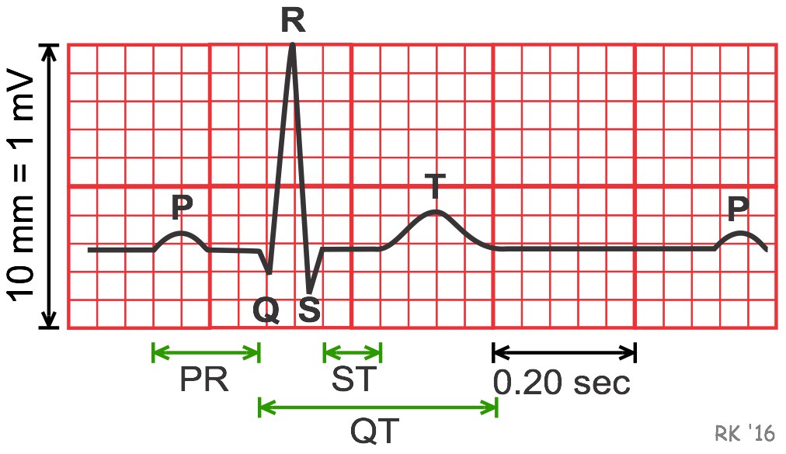
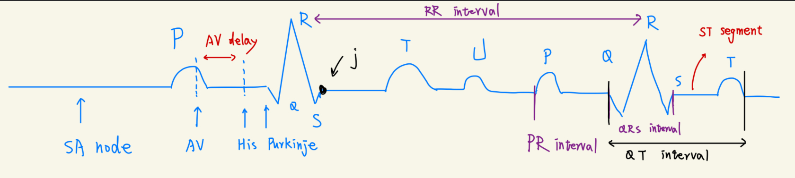
- P ：心房去極化，分為兩部分，前半部分為右心房收縮，後半部分為左心房
- QRS
- 心室去極化
- 定義第一個向下的波為Q，第一個向上的波為R，向上之後向下的波為S
- 根據大小，可以變成小寫（比最大的波的一半還小）
- 例子 ：RBBB之rSR’
- 只有R或S會出現第二個
- 正常值 ：0.06~0.1s（約2小格）
- QRS高 → 肥大
- QRS prolong → 傳導有問題
- T ：
- 心室再極化
- 在Lead I、II、V3~V6必為正向，aVR必為負向
- 前半上升較緩，後半下降較陡，在最高點剛好是epicardium再極化，回到baseline時剛好為心室壁再極化
- U ：V2~V5在低血鉀出現
補充 ：心肌去極化時，肌肉是同時收縮（gap junction），而再極化為epicardium → endocardium，故去極化更同步導致R比T高，且Duration T > QRS
- Segment
- 波跟波之間的線段，不包含wave
- ST segment
- 正常值 ：0.08~0.12s（2~3小格）
- 長度隨HR上升而下降
- 此時心室仍在收縮
- QT segment
- 多用QTc替代
- 男性 ：< 0.44s，女性 ：< 0.46s
- 長度隨著HR上升而下降
- Interval
- 有包含wave
- PR interval
- 因為在大部分導極或非病理情況下，Q波不易見到，故以R代稱
- 正常值：0.12~0.2s（3~5小格）
- 大於0.2 → 1st degree AV block
- 小於0.12 → WPW syndrome
- RR interval ：用來計算HR
- 規則心跳 ：300/大格數
- 不規則心跳 ：十秒內有多少波再乘以6
- 特殊形式之波
- QS wave ：兩個向下的波合而為一
- notched S
- Slurred S
- Slurred R
- Delta wave ：出現在WPW syndrome
- Osborn wave ：J point向下，可能為低溫或高鈣
- Epsilon wave ：出現在V1/V2 的ST段，可能與RV dysplasia有關
- Waves
異常心電圖ㄧ（結構改變、傳導）
- 肥大
- 心房肥厚
- 正常P波由兩部分組成
- 前半是RA，後半是LA
- 在aVR必為負向、在II多為正向
- 看P波必看Lead II以及V1（II平行心房電軸，V1則為垂直）
- V1 多為biphasic，因為在RA去極化方向與V1同向（為正），在LA方向為負
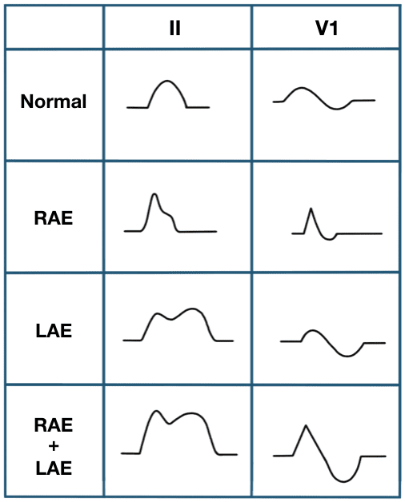
- S當LA擴大時
- P波Duration > 0.11s（三小格）
- 在II 為雙峰型，在V1出現深負向P（負向P ：Duration>0.04s Depth>1mm）
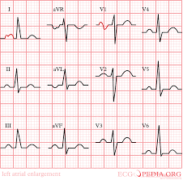
- RA擴大
- Duration正常
- 在II出現peak（2.5mm)，在V1出現高正向P（1.5v）
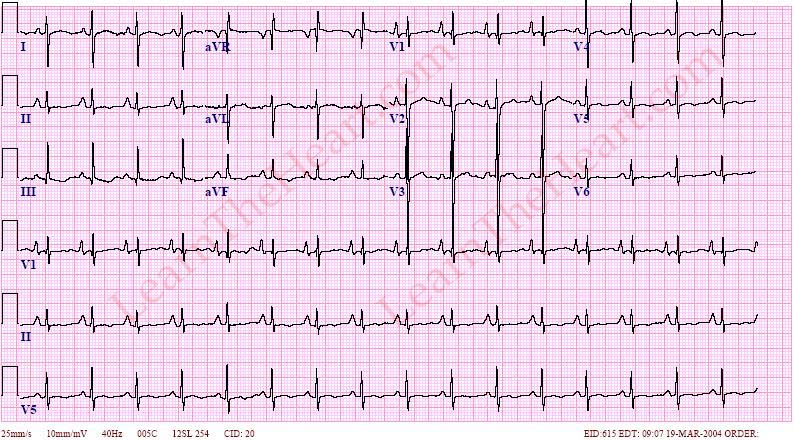
- 雙側心房擴大
- P波Duration > 0.12s且高於2.5v
- 在在II 為雙峰型且有peak，在V1出現高且深的P（>0.06s，且>1.5v）
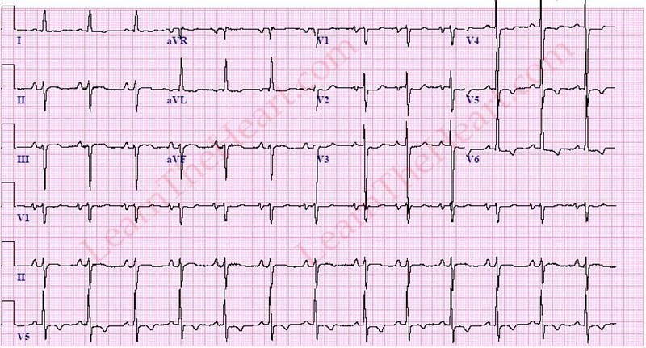
- 正常P波由兩部分組成
- 心室肥厚
- 左心室肥厚，常用criteria有二
- V1S+V5R > 35mm（七大格）
- aVL > 11mm
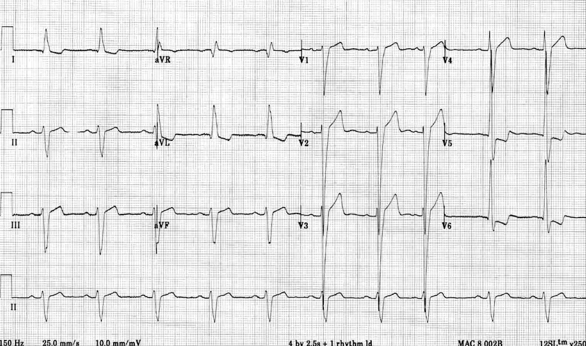
- 右心室肥厚，較不具有特異性除非很嚴重
- V1R > 7mm
- 心軸右偏（Lead I為負，aVF為正）
- V1 之T波inversion，且V2~V3之ST segment depression
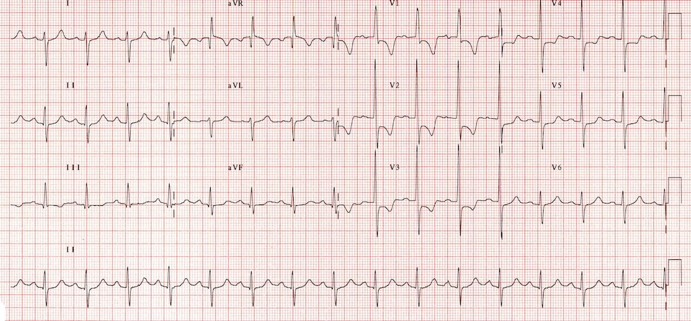
- 左心室肥厚，常用criteria有二
- 心房肥厚
- Bundle branch block
- RBBB
- complete RBBB
- QRS > 0.12s
- 在V1/V2有R’或r’且比原來的R寬 → “兔耳朵”
- V6有寬S
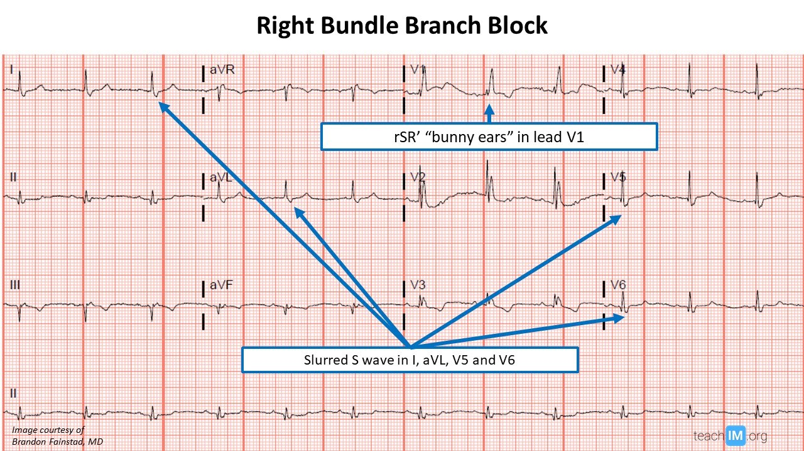
- incomplete RBBB
- QRS <0.12s
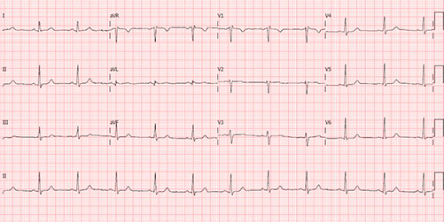
補充1 ：若兒童出現rsr’但持續時間正常，仍視為正常而非RBBB
補充2 ：Functional RBBB，可能由premature atrial complex或SVT誘發
- QRS <0.12s
- complete RBBB
- LBBB
- complete LBBB
- QRS > 0.12s
- V1~V3有小r波
- V5~V6有
- broad notch R
- Slurred R
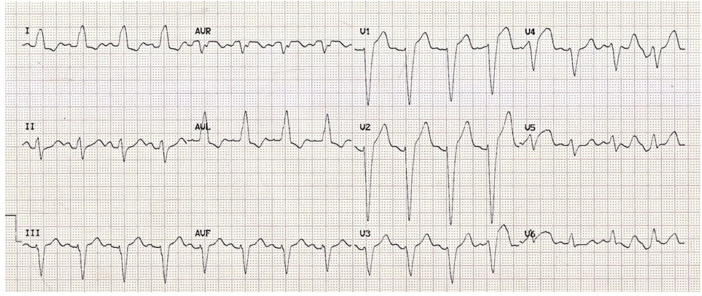
- incomplete LBBB
- QRS < 0.12s
- 多合併LV hypertrophy
- V4~V6之R波 > 60ms
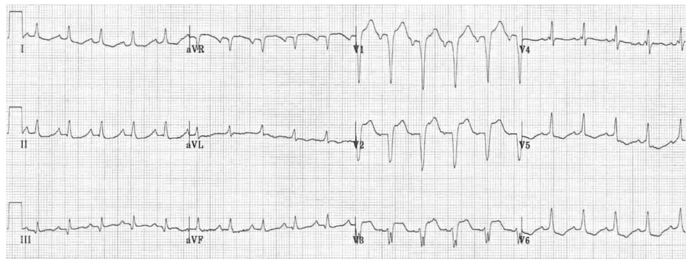
- 快速判斷法 ：
- 先看V1，若為正向QRS → RBBB（未必會有兔耳朵）
- 若V1為負向波且沒有兔耳朵，則看V6有沒有notch或slurred R → LBBB
- complete LBBB
- 補充
- Left anterior fascicular block
- aVL出現qR且R > 45ms
- QRS< 120ms
- 心軸左偏
- 快速 ：Lead I為正且II/III為負，且QRS < 120ms
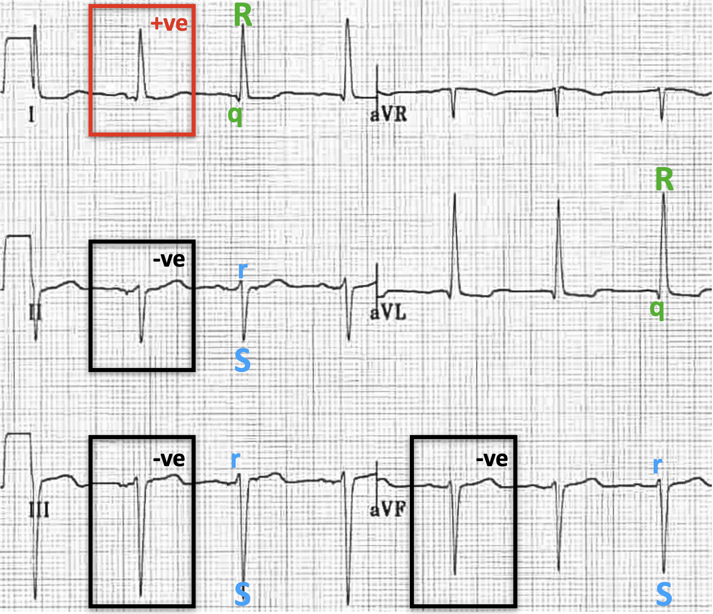
- Left posterior fascicular block
- 多伴隨有RBBB
- 心軸右偏
- Lead I、aVL有rs
- Lead III、aVF有qR
- 快速 ：III之R > aVF之R > II之R, aVL之S > I之S
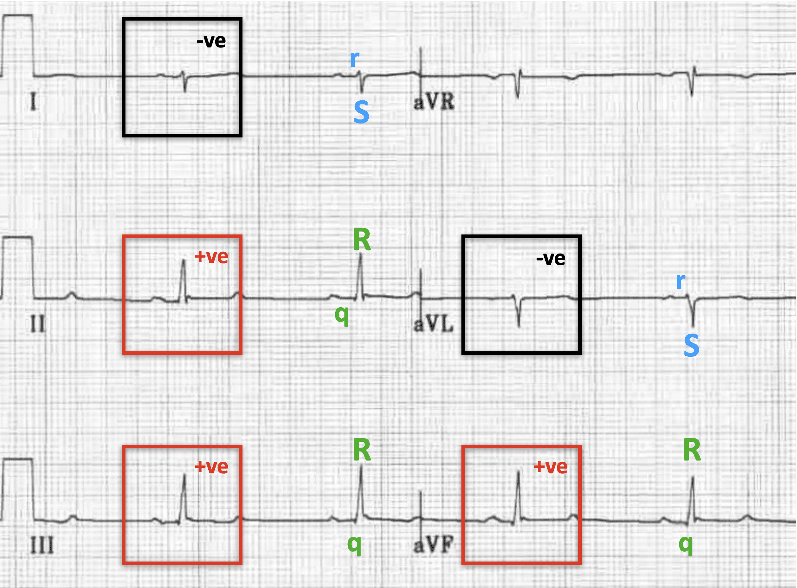
- RBBB可以合併LAFB或LPFB → bifascicular block
- tachycardia BBB ：stage 3 BBB
- Bradycardia BBB ：stage 4 BBB
- Left anterior fascicular block
- RBBB
- SA node
- SA Block
- 1st Degree ：看起來正常
- 2nd Degree
- type I ：PP interval 逐漸縮短，會出現一個pause完全沒波，此pause < 2 PP interval，在pause後PP interval 比pause前最後一個長，又稱Wenckebach阻斷
- 多為5 : 4 block
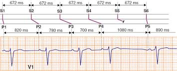
- 多為5 : 4 block
- type II ：PP interval 固定，會出現一個pause完全沒波，此pause ＝ 2 PP interval
- SA 2 : 1 Block ，pause ＝ 2 PP interval，每兩個波出現一個pause
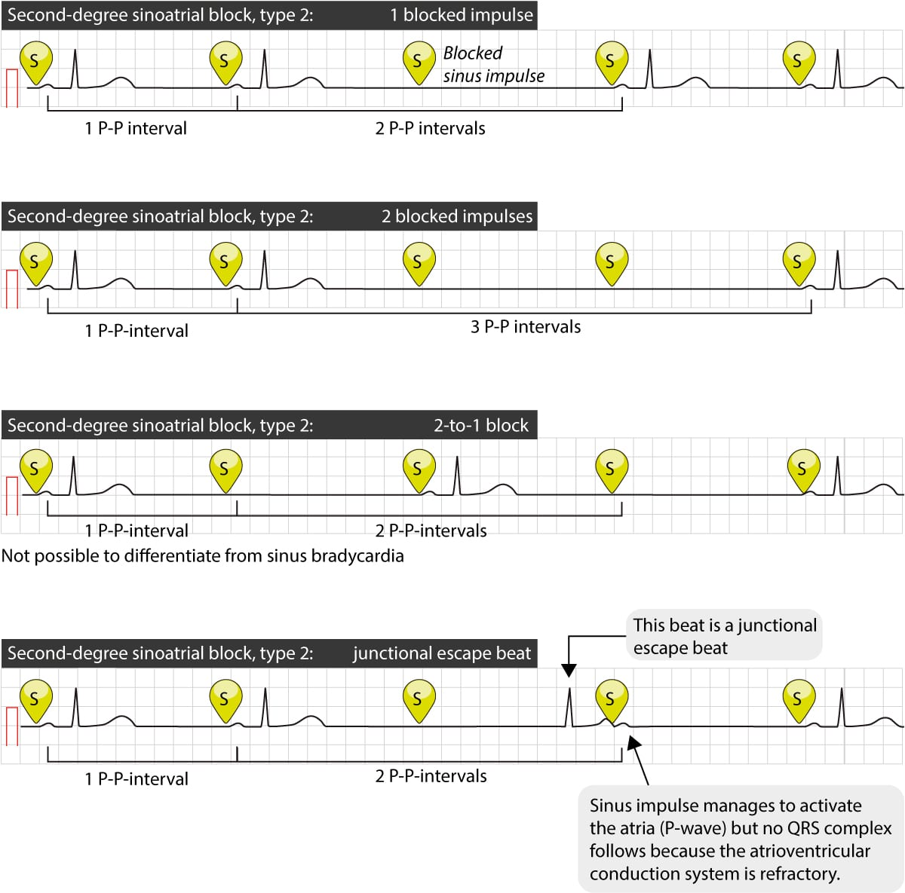
- SA 2 : 1 Block ，pause ＝ 2 PP interval，每兩個波出現一個pause
- type I ：PP interval 逐漸縮短，會出現一個pause完全沒波，此pause < 2 PP interval，在pause後PP interval 比pause前最後一個長，又稱Wenckebach阻斷
- 3rd Degree ：sinus arrest，PP interval 固定，會出現一個pause完全沒波，此pause <或> 2 PP interval
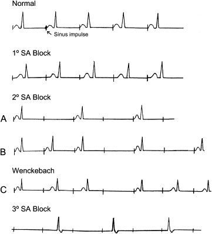
- Pacemaker
- 遊走性心房節律（Wandering atrial pacemaker，WAP）
- 起搏點在不斷改變，但整體節律仍是相對穩定和正常的
- 有三種以上的P
- HR < 100 → WAP
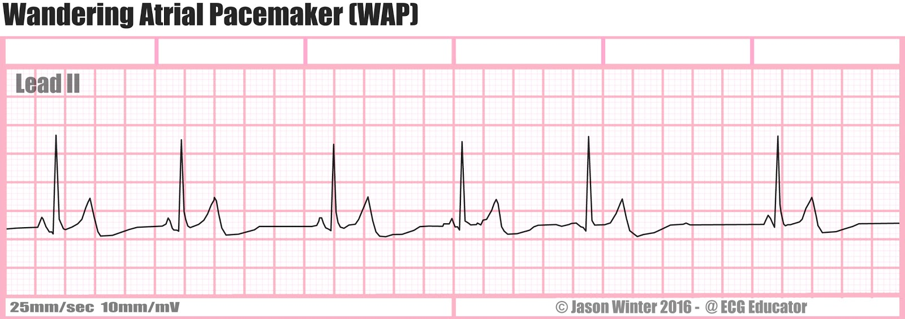
- HR > 100 → Multifocal atrial tachycardia
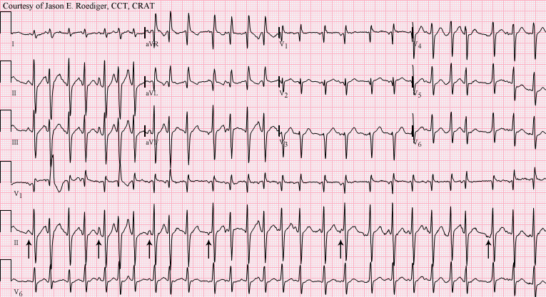
- HR < 100 → WAP
- Junction rhythm
- 源自於AV junction
- 特殊P波
- invert P
- 沒有P
- QRS之後有P
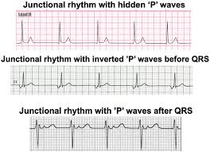
- 心室正常 → QRS窄
- 特殊P波
- 根據HR分為
- Junctional escape rhythm ：40~60下
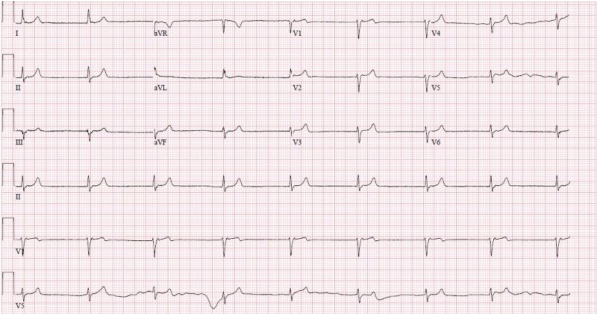
- Accelerated junctional rhythm ：60~100下，多因爲Digoxin中毒
- Junctional tachycardia ：大於100下
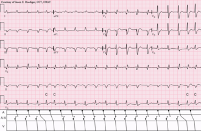
- Junctional escape rhythm ：40~60下
補充 ：房室解離不等於3rd AV block且沒有逆行性傳導，會出現capturing beat，其出現位置比預期之junctional rhythm早出現
- 源自於AV junction
- 遊走性心房節律（Wandering atrial pacemaker，WAP）
- PAC/PVC
- Premature atria complex
- 正常的竇性心律為主，但在某一拍上突然被提前的 PAC 打斷，後面通常會有一個代償間歇（Compensatory Pause）
- 不影響整體心律，多為良性
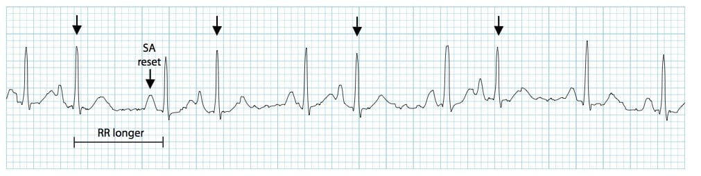
- Premature ventricular complex
- 沒有P波（有時候正常心律的P會融合入PVC）
- QRS > 0.12s，多伴隨一個pause
- Pair
- bigeminy、trigeminy、quadrigeminy
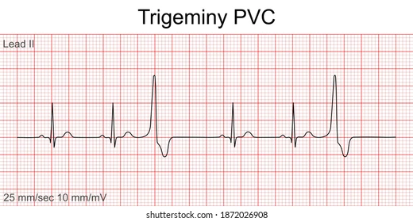
- PVC in couplet (triplet）
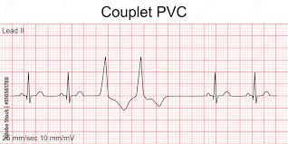
- bigeminy、trigeminy、quadrigeminy
- 根據QRS型態分為unifocal跟multifocal，multifocal其interval 不固定
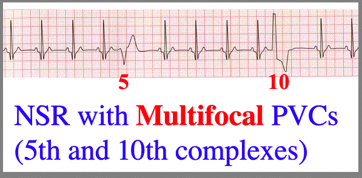
- 其他類型（補充）
- 內差性 ：介於兩QRS間且沒有pause
- End- diastolic PVC ：PVC融入QRS中
- R-ON-T ：PVC出現在上一個正常T後 → 預後極差
- 其他類型（補充）
- Pair
- Premature atria complex
- Sick sinus syndrome
- 多指SA node，包含bradycardia、sinus arrest/block、tachy-brady
- Supraventricular tachycardia
- SA node related
- Sinus bradycardia
- SA node reentrant tachycardia（補充） ：HR在100~150，carotid massage沒有用
- Atrial tachycardia
- 窄QRS（代表心室不受影響），當HR上升可能會出現2:1、4:1 conduction
- 看V1
- 負向或biphasic → RA發出
- 正向 → LA發出
- 下壁導極若出現正P波，代表origin在上，反之在下
- P可能invert且未必在QRS前（P之間有等電性baseline，AF沒有）
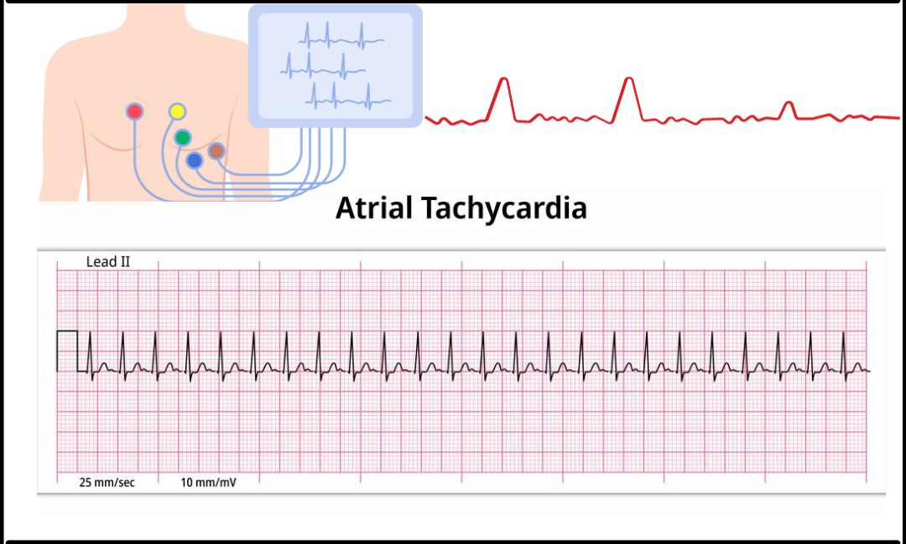
- Multifocal atrial tachycardia 見 Pacemaker
- SA node related
- 補充
- 呈現LBBB形態之PVC，代表來自RV或septum，在V1可以看到深S
- 呈現RBBB形態之PVC，代表來自LV，在V1可以看到高R
- 並行收縮
- 加速性心室自主心律
- HR > 40
- 寬QRS，前方沒右P
- SA Block
- AV node
- AV Block
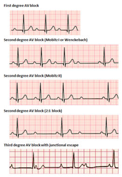
- 1st Degree ：PR interval > 0.2s（一大格）
- 2nd Degree
- Mobitz type I ：為sinus rhythm，PR漸漸延長以至於突然有一個P後面無法傳遞，但會再回復並且PR會縮短
- Mobitz type II ：PR不論在阻斷之前之後都固定，QRS可寬可窄
- 2 ：1 AV block ：每當一個P傳下去後，下一個會傳不下去，與Mobitz 不同在於不會有連續兩個P可以往下傳，QRS可寬可窄
- High grade ：3 ：1或是4 ：１
- 可以合併喔！例如：3:2 block合併 2:1 block
注 ：心房心律必定大於心室心律
- 3rd Degree ：P是由跳脫心律，完全與QRS分離，且QRS可寬可窄
- Flutter/ Fibrillation
- Flutter ：
- HR 介在 240~300，若HR在340~350則可能是左心房之F波
- 鋸齒狀F波（非P波）
- 分為逆時針跟順時針型
- 逆時針 ：在下壁導極之波為負（低於baseline），在V1為正
- 順時針則相反但少見
- 多為3:1或5:1，也可以與不同程度AV Block同時出現
- WPW會出現1 :1 conduction with Flutter
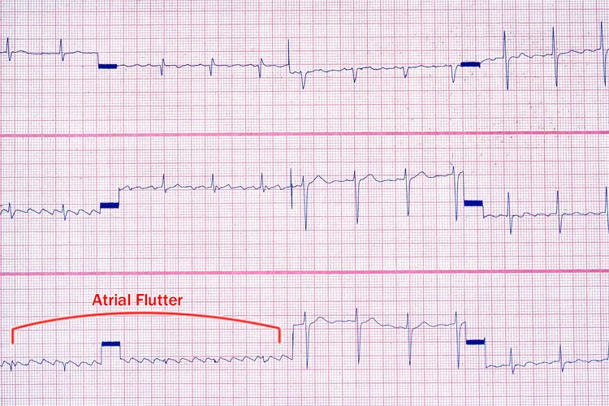
補充1 ：當HR在150左右且QRS窄，會先視為Flutter，若RR interval 中有心房收縮波，可能在QRS發現另一個波
補充2 ：carotid sinus massage可以降低ventricular rate，使F波更明顯
- Fibrillation
- 不規則f波，心律介在350~600 bpm
- 波浪狀，若是慢性Afib不會有 → 不可用波浪當作判斷
- RR interval irregular (irregularly irregular)
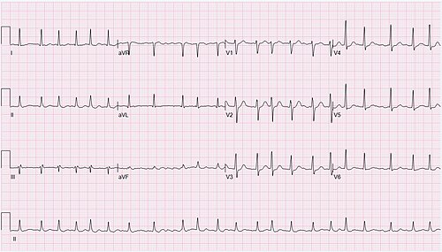
- 若是ventricular rate慢可能伴隨3rd AV block
- 也可以伴隨RBBB
- Flutter ：
- PSVT
- AVNRT
- HR ：120~250
- 分為三種
- 慢-快 ：最常見，P多位在QRS內導致不可見，若出現P多會在QRS後
- 在V1為假r’
- 在下壁導極會有假S
- 在AVNRT後多有ST depression
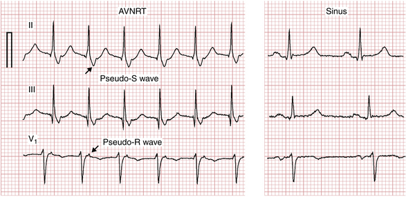
- 快-慢
- 慢-慢
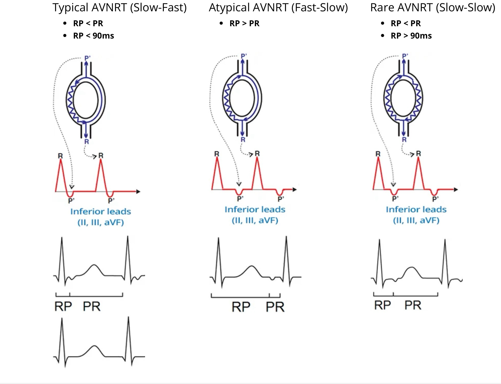
- 慢-快 ：最常見，P多位在QRS內導致不可見，若出現P多會在QRS後
- AVRT
- HR ：150~250
- 在V1沒有假r’， 在下壁導極也沒有假S
- 若QRS後有invert P，距離會比AVNRT遠
- 會有QRS obliterans（QRS的振幅會不斷改變，但特異度低）
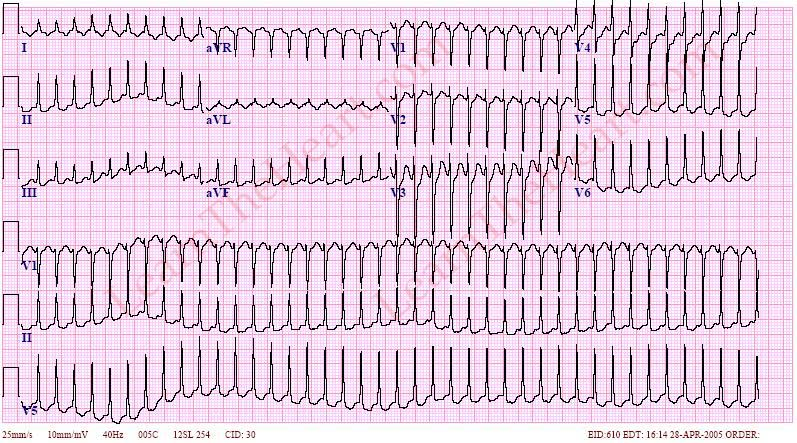
- AVNRT
- AV Block
- VT
- PSVT與VT最大差別是QRS寬度（PSVT窄）
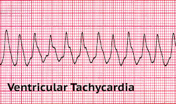
- Torsedes de poites
- 為正弦波（sine wave），ventricular rate 在160~250 bpm且RR interval irregular
- 心軸翻轉
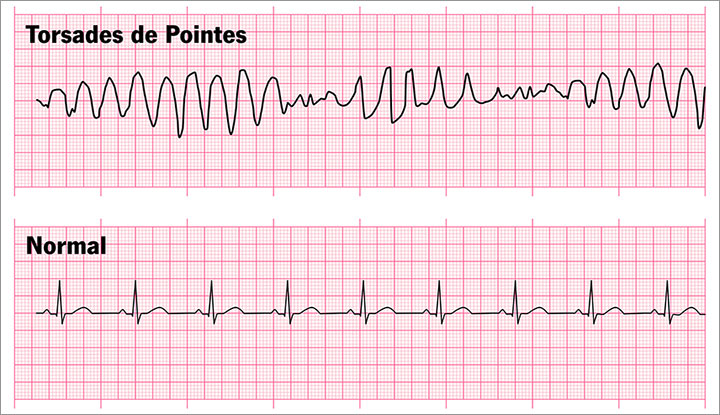
- 寬QRS鑑別診斷
- Brugada演算法
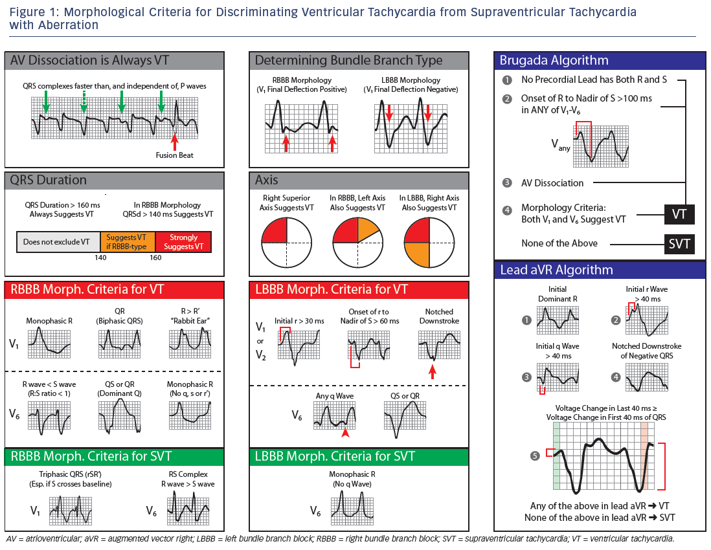
- 可能診斷
- 定義 ：regular, HR > 100且QRS >0.12
- VT
- SVT with BBB
- Pre-excitation ：若V1~V6看到負同向，或V1以外看到深Q則可以排除
- Ventricular fibrillation/flutter
- Ventricular fibrillation
- HR在350~450bpm
- 很像polymorphic VT(不易區分）
- PVC couple，時間短
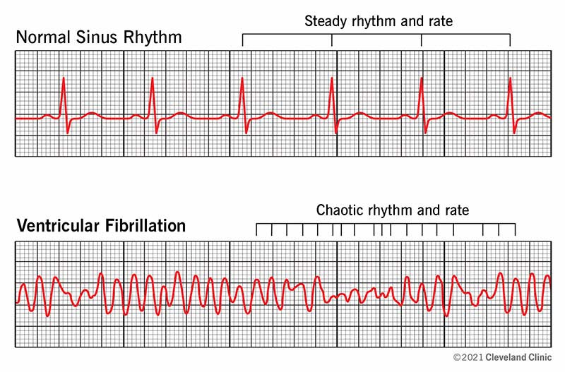
- Ventricular flutter （跟VT差在更像sine wave）
- HR約在300bpm（VT多在120~250之間）
- 常變成fibrillation
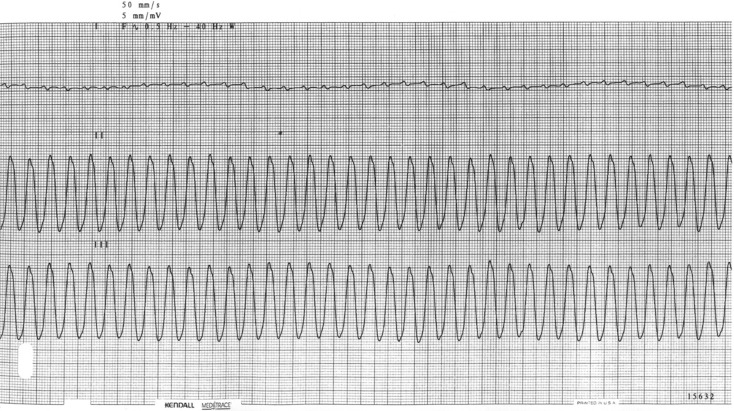
- Ventricular fibrillation
- Brugada syndrome
- V1~V3之ST上升，且為polymorphic VT
- 分為
- type I ：最常見，J point上升 > 2mm 且T inversion
- type II ：saddle-back，J point上升 > 2mm且T為正或biphasic
- type III ：J point上升 < 1mm且T為正或biphasic
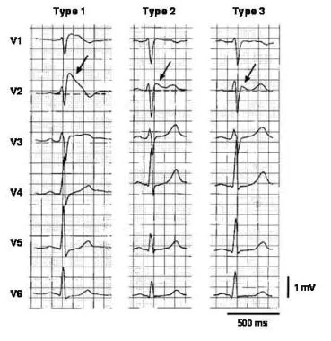
- VT之各種形式（補充）
- AV dissociation ：P與QRS完全無關，心房率未必大於心室率，會有寬QRS
比較 ：3rd AV block是一種AV dissociation，但心房率必大於心室率
- Fusion beat ：QRS很高，且比單純VT之QRS窄
- VT in RBBB form
- QRS > 0.14
- 心軸上偏且V1為biphasic，若為triphasic（兔耳）
- 右耳大於左耳 ：conduction 問題，非真正VT
- 左耳大於右耳 ：VT
- triphasic也可以是因為SVT導致
- VT in LBBB form
- QRS > 0.16s
- 心軸右偏，在V1/V2中QRS為正向
- S波為notched down slope wave
- V6可能有q或Q
- V1~V6之QRS皆負向（QS波或負QRS）→ VT，皆正為VT或SVT
- AV dissociation ：P與QRS完全無關，心房率未必大於心室率，會有寬QRS
- VT不同成因（補充）
- Catecholamine VT
- 運動時VT
- 休息時為U波
- Idiopathic VT
- 起源於右心室出口 ：LBBB＋心軸右轉
- 起源於左心室出口 ：V1/V2出現R波過渡
- Aortic wave ：V5/V6沒有S
- 心律失常 RV dysplasia
- BB reentry tachycardia ：LBBB+ VT
- Catecholamine VT
- PSVT與VT最大差別是QRS寬度（PSVT窄）
- QT prolong/shorten
- Long QT syndrome
- 先天鉀離子突變
- Drug（抗心律不整）
- 可能出現Torsedes de poites
- QTc > 0.44s或0.46s
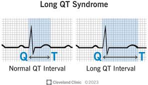
補充 ：若出現T wave alternans則預後很差
- Short QT syndrome
- 高溫、高鉀、高鈣、酸中毒
- 高且尖的T且ST segment消失
- QTc < 0.33s或 < 0.34s
- QT不隨HR下降而prolong（正常人會），當HR上升會使QT更短
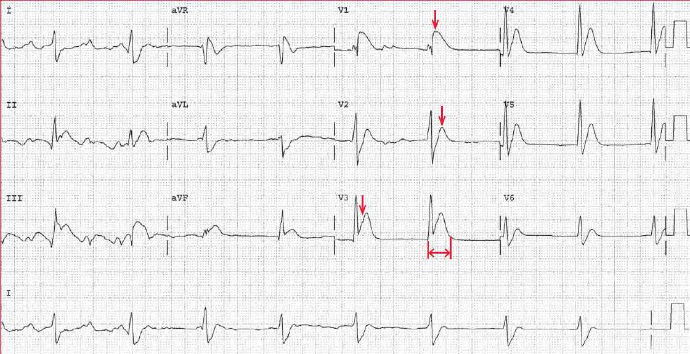
- 冠狀動脈缺血 ：polymorphic VT但QT長度正常
- Long QT syndrome
- Pre-excitation syndrome
- Pulse由accessory pathway 到ventricle
- PR < 0.12s, delta wave
- Wide QRS
- 最常見為WPW syndrome，訊號來在accessory pathway
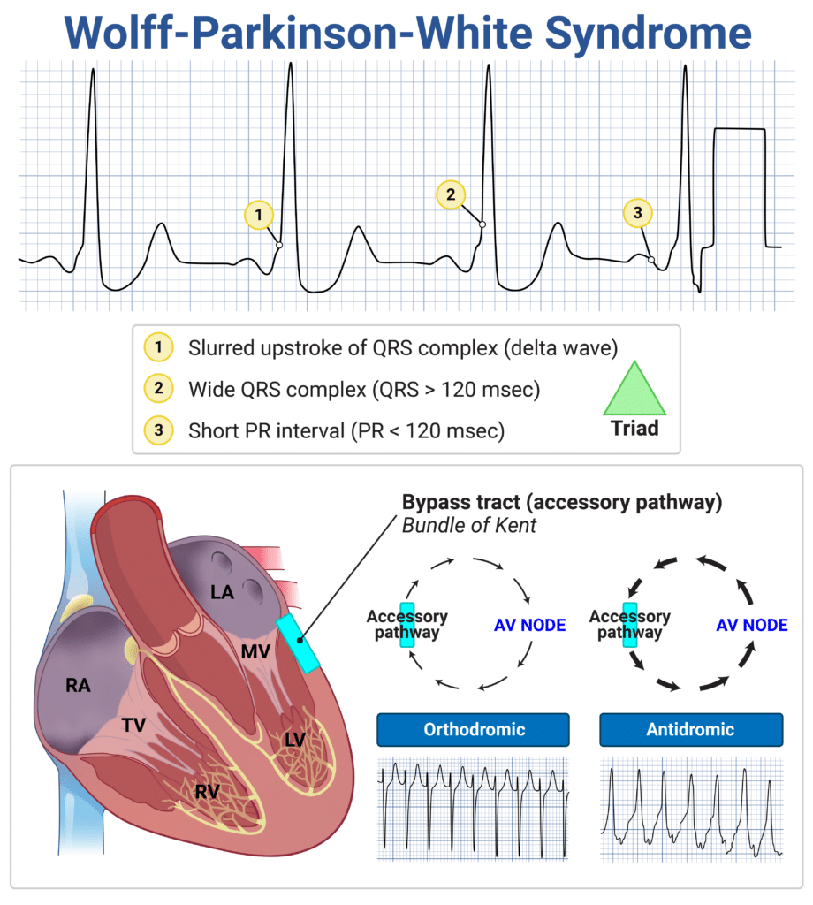
- WPW syndrome
- WPW syndrome要與以下做鑑別
- MI ：下壁導極的WPW Q波（負向delta wave）常被誤認為MI
- RBBB ：V1高R波
- 心室肥厚
- ischemia
- WPW與其他異常心電圖
- 多半有AVRT
- 順向AVRT ：區別在AVRT沒有delta wave，且在下外側導極多inversion
- 逆向 AVRT：AVRT較規則，且寬QRS，伴有R波上升
- 有時也會有Afib跟AF
- wide QRS
- HR : 250~300
- 會形成VF
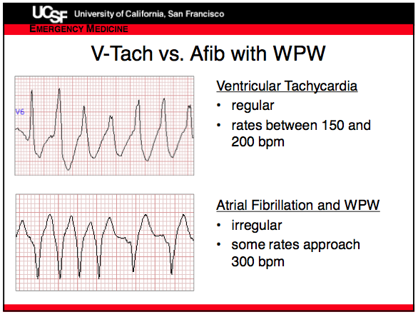
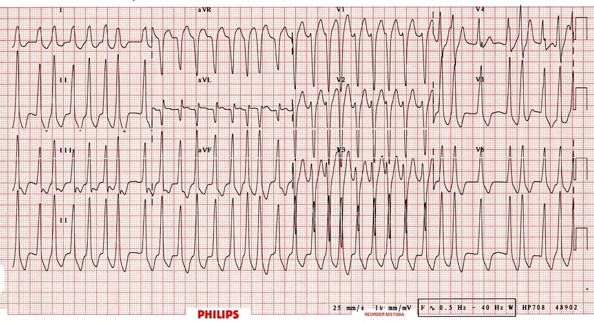
注 ：不規則QRS並且類似VT，伴有ventricular rate >200 要考慮AF
- 多半有AVRT
- 其他類型（補充）
- Atriofascicular ：LBBB + 逆行AVRT
- Atrial hisian bypass ：PR < 0.12s
- Fascicularventricular
- WPW syndrome要與以下做鑑別
- Pulse由accessory pathway 到ventricle
異常心電圖二 （冠心病、心包膜、心臟外、離子）
- CAD-異常finding
- ST change ：ST上升或下降取決於導極與缺血區域位置，並無絕對
- ST上升
- 必須在相鄰導極，如外側（Lead I、aVL、V5/V6)、前壁（V1~V4）、下壁導極（Lead II、Lead III、aVF)
- 定義 ：相鄰導極J point上升
- convex比concave（可能是早期再極化）更可能是STEMI
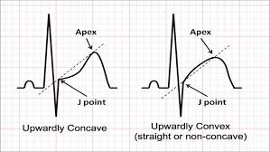
- Tombstone ：ST段和T段融合，多在前壁導極，死亡率極高
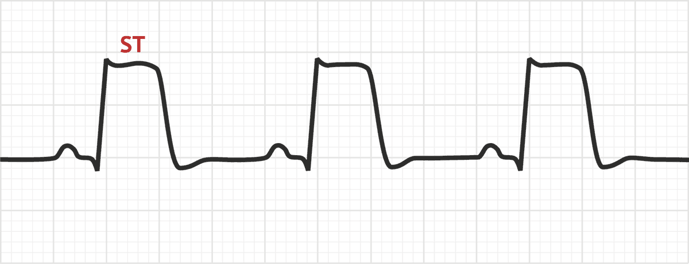
- 當某Lead有ST上升，與其相差180度導極會出現ST下降，例如下壁MI，下壁導極會ST上升，外側導極（Lead I、aVL）會ST下降
- 有些人ST上升不明顯，會看對應180度導極有沒有ST下降判斷
- 多用來判斷後壁MI（用前方導極看）
- ST下降
- 缺血發生在心內膜（NSTEMI）
- 相鄰導極出現
- > 0.05mV之ST下降
- > 0.1 mV之T invert 且 R/S > 1（未必有）
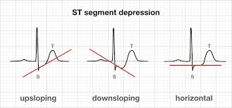
- Upsloping之特異性最低，其餘兩者較可能是NSTEMI
注 1 ：unstable angina與NSTEMI不能只用EKG區分，因為都可能出現暫時ST上升、T波變化、ST下降
注2 ：再灌流會使ST回復，Q wave未必會有變化，T wave會變成invert
補充：ST持續上升（可為convex或concave），多因爲LV有壁瘤，出現在V1~V6、Lead I、aVL，T多invert
- ST上升
- T波 ：
- 正常T波inversion ：
- aVR必定invert
- Lead III或V1若有invert → 除非V1~V4有深且不對稱invert T才是ischemia
- 心內膜下缺血 ：invert T，多為NSTEMI
- Transmural ：
- Hyperacute T ：高T（不對稱，底寬），要與高血鉀區分
- 後期 ：invert T
- 正常T波inversion ：
- Q波 ：
- 大部分old STEMI有
- 要區分
- 暫時性Q波
- 舊Q波
- 正常Q波 ：多在外側導極（Lead I、aVL、V5/V6)，小於R高度1/4，duration < 0.03s
注 ：aVR也會有Q，若Lead III有Q應該要看Lead II、aVF是否有異常，若沒有則Lead III之Q波是正常的
- Poor R wave progression ：多在前壁導極（V1~V4），但專一性低（右位心也可能有）
- ST change ：ST上升或下降取決於導極與缺血區域位置，並無絕對
- CAD-類型
- MI類型是由導極以及阻塞動脈決定－LAD
- LAD兩大分支
- S1 infarct
- 代表septal導極 ：V1、aVR
- V1、aVR之ST上升且有RBBB
- D1 infarct
- 代表高外側導極 ：Lead I、aVL
- Lead I、aVL之ST上升，對應180度之下壁導極則ST下降
- LAD若變異，導致有供應血流到心尖，infarct會使前壁、下壁ST上升
- LAD近端狹窄會導致T invert/V2~V3出現biphasic T
- 比S1更近端塞住 ：V1~V4上升（對應下壁ST下降，III > II）且aVL上升多於aVR
- S1遠處與D1近端之間 ：受影響的D1，呈現D1 infarct
- 若是D1變異到比S1高位，S1近端與D1遠端之間，則受影響的是S1，呈現S1 infarct
- S1及D1 遠端 ：皆不受影響
- V1、aVR、aVL不會ST上升
- Lead II、Lead III、aVF不會ST下降
- V3~V6的ST上升比近端infarct更明顯（V2不明顯）
- 比S1更近端塞住 ：V1~V4上升（對應下壁ST下降，III > II）且aVL上升多於aVR
- S1 infarct
- LAD兩大分支
- LCA/RCA/Lcx
- LCA infarct ：大量導極ST下降，aVR之ST上升 > V1之ST上升
- 下壁MI
- RCA infarct ：下壁導極ST上升，且III > II，對應180度之I、aVL之ST下降
- Lcx occlusion ：上升II > III，I 沒有ST下降，並且有外側infarct
- RCA infarct ：下壁導極ST上升，且III > II，對應180度之I、aVL之ST下降
- Lcx
- 若伴隨下壁MI，並出現V1~V3之ST下降 → 後外側缺血
- V1/aVL可為等電位或是ST上升
- 側壁V3~V6 ST上升也是Lcx infarct（V5/V6更可能是）
- 若伴隨下壁MI，並出現V1~V3之ST下降 → 後外側缺血
- LCA infarct ：大量導極ST下降，aVR之ST上升 > V1之ST上升
- 後壁MI
- 多伴隨有下壁、側壁MI
- 但因為Lcx阻塞不易發現ST上升，用V7~V9診斷
- 後壁ST上升，對應前壁MI下降（reciprocal change），後壁出現Q，對應前壁R，後壁出現T invert，對應前壁Hyperacute T
- V1/V2出現duration > 0.04s之R，伴有正T且R/S > 1
- I、II、aVL、aVF或V4~V6出現duration > 0.03且深 > 0.1mV之Q或QS波
- 運動測試（補充）
- ST change 可出現在Lead I/V3~V6，除aVR以外的導極若有ST下降 → ischemia
- 緩慢upsloping ST為異常
- 若運動後ST上升常出現在曾有MI（前壁出現機率比下壁高）
- 合併其他異常心電圖（補充）
- MI + RBBB ：S1及D1近端LAD阻塞
- MI + LBBB ：Lead I/V6不會有q，V1有r
- MI併有arrythmia
- SVT
- Accelerated junctional rhythm
- Bradycardia
- AV block
- Conduction block below AV node ：RBBB，在LAD近端
- RVMI（補充）
- 少見，多合併下壁MI
- 用V3R/V4R（與V3/V4對應）診斷
- V4R之ST上升 > 1mm → 近端RCA問題
- ST等電位，T正向 → 遠端RCA
- ST下降 > 1mm → Lcx問題
- 章魚壺（補充）
- 又稱心碎症候群
- 似STEMI的進程，但沒有Q，ST上升以V2~V5為主且高度不如STEMI
- MI類型是由導極以及阻塞動脈決定－LAD
- 心包膜異常
- 急性心包膜炎
- 分為四期
- Stage 1 ：廣泛concave向下，ST上升且PR下降（aVR/V1則相反）
- Stage 2 ：ST與PR正常，T波緩
- Stage 3 ：T invert
- Stage 4 ：T invert 消失（也可存在），QRS low voltage
- Stage 1 ：廣泛concave向下，ST上升且PR下降（aVR/V1則相反）
- 分為四期
- Pericardial effusion
- Low voltage QRS
- QRS alternans
- Tachycardia
- 與MI診斷差異
- MI多以convex變化，心包膜炎多以concave
- MI當ST上升時，會同時出現T invert或是Q波，但心包膜炎在ST上升時不會有T invert
- 與早期再極化診斷差異
- 早期再極化 ：胸前導極ST上升
- 連續兩個相鄰導極出現J point/ST concave 上升，可伴有slurred J point，或是對稱的大T波
- 用V6之ST/T比值區分
- > 0.25 → 心包膜炎
- < 0.25 → 早期再極化
- 連續兩個相鄰導極出現J point/ST concave 上升，可伴有slurred J point，或是對稱的大T波
- 早期再極化 ：胸前導極ST上升
- 急性心包膜炎
- 心臟外疾病
- COPD
- pseudo-infarction ：出現R wave poor progression/Q波
- V1~V3可能消失（稱為SV1-SV2-SV3），V4~V6 的QRS low voltage
- 心軸偏右 ：RV/RA肥大
- 可伴有AF/Afib/MAT
- PE
- 多種EKG change
- S1Q3T3 ：I有S，III之Q明顯且T invert
- SAH
- ST下降，大U波
- QT prolong
- 大且寬invert T(roller coaster sign)
- Hypothermia
- Osborn wave ：J point呈現駝峰樣
- 多因爲VT死亡
- Hyperthermia
- HR上升，導致QT shorten
- 可能出現心律不整
- Endocrine（不具有特異性）
- Acute pancreatitis ：ST上升，伴有tachycardia
- 甲亢 ：sinus tachycardia，Afib，LAFB，RBBB
- 甲低 ：多因爲pericardial effusion導致ECG change，多不會有明顯變化，可能有bradycardia
- COPD
- 離子
- 血鉀
- 高血鉀
- wide QRS，高尖窄T波（艾非爾鐵塔）且高度大於R波
- 週期性變化 ：高T → 寬QRS/PR prolong/寬P → 沒有P →sine wave
- 可逆AV block
- 心軸偏轉
- 有時V1/V2之ST上升（downslopping）
- 低血鉀
- U波、T波變平或invert
- ST下降，P寬且高
- 當T越小U越大 → U大於T時兩者融合 → QT prolong（實際上是QU prolong）
- 引起VT/VF
- U波、T波變平或invert
- 高血鉀
- 血鈣
- 高鈣
- ST短，且QT短
- T波前半陡升，後半緩降（與正常相反）
- 可能有osborn wave
- ST短，且QT短
- 低鈣
- 窄QRS，PR短且T扁平
- ST長，QT prolong
- 可能AV block或是VF
- 窄QRS，PR短且T扁平
- 高鈣
- 血鎂
- 高鎂 ：conduction prolong，例如AV block
- 低鎂 ：
- 用Digoxin造成的可能出現SVT/VT，scooping
- 其他原因導致的可能有QT/PR prolong，寬QRS
- 用Digoxin造成的可能出現SVT/VT，scooping
- 血鉀
- 運動員（補充）
- 很多非特異性變化
- QRS高 ：心肌有力
- Incomplete RBBB，心軸右偏
- 早期再極化 ：J point/ST concave 上升，可伴有slurred J point，或是對稱的大T波
- Vagus n. ：sinus bradycardia、Mobitz II AV block
- T invert ：黑人多（尤其V2~V4，若下壁或側壁出現invert仍可能是MI）
- ST下降
- 很多非特異性變化
判讀順序-巨觀到微觀，P波到T波，心臟到心外
- 巨觀
- 微觀
- HR
- 大於100 ：tachycardia
- 60~100 ：normal
- 小於60 ：bradycardia
- 看RBBB/LBBB，同Bundle branch block
- 看P波是否存在
- 有，為sinus thythm
- 看Lead II，正常P為正，在aVR，正常P為負
- 在II非正
- 接反 ：R progression正常
- 右位心 ：reverse R progression
注：兩者在I，為完全負向 P、QRS、T
- 在II非正
- 看rhythm
- 要綜合HR、P波、rhythm一起看
- P看Lead II/V1
- tachycardia
- 有P ：sinus tachycardia
- 沒有P ：PSVT
- QRS regular且寬 ：VT
- Normal
- 有P ：normal
- 沒有P
- AF ：F波
- Afib ：irregular RR interval
- Bradycardia
- 有P ：sinus bradycardia
- 沒有P ：junctional rhythm
- AV block
- HR > 100且有P invert ：atrial tachycardia
- 多種P且HR > 100 ：MAT
- 逆行P可在QRS前或後
- 要綜合HR、P波、rhythm一起看
- PR interval
- < 0.12s → WPW，看delta wave
- > 0.2s → AV block，同AV Block ，有時P會在前一個T中
- QRS duration
- 0.1s < QRS < 0.12s ：incomplete RBBB/LBBB，或是interventricular conduction異常
- QRS > 0.12s
- 有P ：complete RBBB/LBBB
- 沒有P ：VT
- QRS voltage
- 高 ：LV hypertrophy，要排除高血鉀、WPW
- 低 ：肢體導 < 5mm，胸前導 <10mm → 心臟外問題
補 ：太瘦、運動員、年輕人QRS會比較告
- R progression
- Poor ：Anterior MI、LV 肥大、右位心
- Reverse ：RV肥大，Post MI，右位心
- QT
- QT < 0.33s → short QT
- QT > 0.46 → long QT
HR上升，QT會下降
- T波
- 正常在I/II/V3~V6為正，aVR為負
- 高T
- Hyperacute MI ：寬、圓滑頂，之後會invert
- 高血鉀 ：窄、尖頂
- 駝峰狀
- 低血鉀 ：TU融合，T波變平
- AV block ：有時候T與P融合
- U波
- 看V2/V3
- 低鉀 → U高
- U invert ：缺血或是LV overload
- HR
- 心臟問題，見CAD-異常finding 與CAD-類型
- ST段
- ST下降 ：
- 缺血
- 心內膜下
- Digoxin ：scooping
- ST上升 ：
- STEMI ：convex
- transmural MI
- pericarditis
- ST下降 ：
- STEMI
- 連續鄉林導極上升，多為convex向上
- 肢體導上升0.1mV以上，胸前導上升0.2mV以上
- NSTEMI
- 可合併Q波
- J point下降
- Downslopping/horizontal/upslopping
- 其他
- 不可逆病理性Q波
- RVMI
- 早期再極化
- J point上升，QRS有notched 或sluured J
- concave向上，大對稱T
- 下外壁MI ：下外導極R之下降段出現notched 或sluured
- CHF
- LBBB + 心軸右偏 ：心肌病變
- V1明顯負向P
- QRS、QT duration跟voltage下降
- 肢體導之QRS voltage低，胸前導較高，並有poor R progression且V4之R/S < 1
- ST段
- 心臟外 ：見心包膜異常 、心臟外疾病 、離子